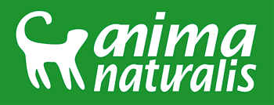

AnimaNaturalis
Presiona para ir a AnimaNaturalis



AnimaNaturalis existe porque miles de millones de animales sufren en manos humanas. Porque esos animales necesitan soluciones. Porque merecen que alguien alce la voz por ellos. Porque los animales necesitan cambios. Porque en AnimaNaturalis queremos construir un mundo más justo para todos. YO SOY ANIMANATURALISAnimaNaturalis es una organización no gubernamental y sin fines de lucro, que trabaja para la defensa de los animales en España y Latinoamérica. AnimaNaturalis se centra en evitar el sufrimiento de los animales en las principales áreas donde son utilizados: .jpg)
AnimaNaturalis no pertenece a ningún partido político ni grupo religioso y sólo colabora externamente con aquellos que demuestren apoyar uno o varios de los valores que promueve nuestra organización. FundadoresAnimaNaturalis fue fundado en 2003 por Leonora Esquivel Frías y Francisco Vásquez Neira. Para ambos, la información aporta al desarrollo de la sensibilidad y la misión de AnimaNaturalis es contribuir al sueño de una sociedad menos cruel con los animales y demás seres sintientes.
copyright 2012 Mandanos un mensaje via e-mail veronicafelixquiroz@gmail.com |